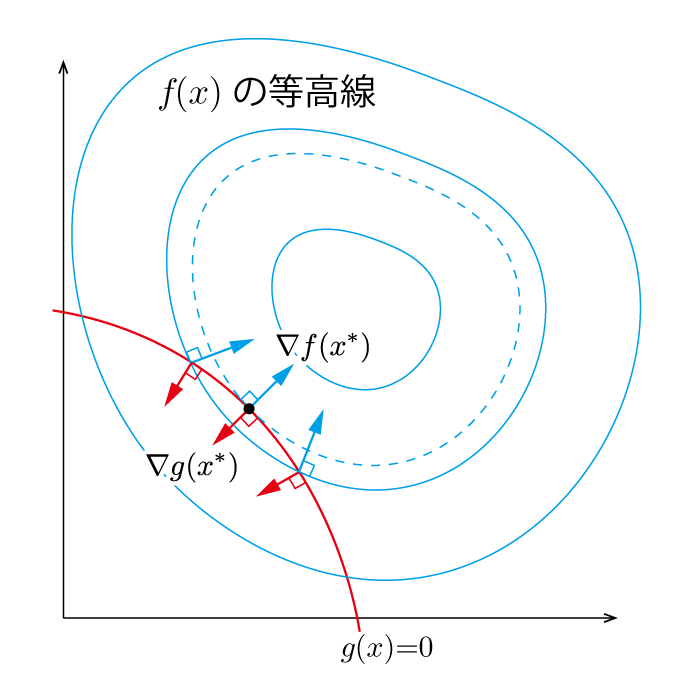

ある多変数関数f(x1,x2,⋯,xn)の停留値問題を考える．極小値(あるいは極大値)を考えることに似ているが，とにかく傾きがゼロになる点を求める(例えばf(x)=x3におけるx=0は極大でも極小でもないが停留値である)．
n次元を考えるのは大変なので，2変数関数程度のものをイメージすると良い．
停留点においては，わずかにxiの値を変化させたところで関数の返り値はほとんど変化しない．すなわち，関数fの停留値からのズレをδfで表すと，
δf=∂x1∂fδx1+⋯+∂xi∂fδxi+⋯+∂xn∂fδxn=0
が成立する．このように点を（わずかに）変化させたときの変位を仮想変位と呼ぶ．
この式だけでは，例えばいい感じに∂f/∂xiと∂f/∂xjが打ち消し合った結果，δf=0となっても構わないのだが，停留値であるという条件下においては，いかなるδxについてもδf=0が成立する（例えばボウルの底，あるいは鞍点のような点をイメージすると良い）．すなわち，
∂xi∂f=0
がすべてのiについて成立する．これが停留値となるための条件である．
上記では，すべての変数xiが独立であると仮定していた．ここでは，変数が独立ではない場合を考えよう．すなわち，
g(x1,x2,⋯,xn)=0
という拘束条件が存在するときのfの停留値問題を考える．ここでは，拘束条件がx1,x2,⋯,xnだけで表され，これらの微分にはよらない場合を考えよう．このような条件をホロノミック拘束と呼ぶ．
拘束条件が存在すると，もはや各変数は独立変数ではなく，仮想変位を考えるときにも制約が生まれてしまう．そうなると停留値問題は単純に
∂xi∂f=0
が満たされればよいというわけにはいかなくなる．
ホロノミックな拘束条件を用いると，変数の数を減らして考えることができる．すなわち，ある変数xk（問題を解く上で都合の良いものを選べばよい）を選び，それを他のn−1個の独立変数で表すことができる．ここでは簡単のため，
xn=xn(x1,x2,…,xn−1)
としてみよう．x1,x2,…,xn−1は完全に独立な変数となる．
このとき，
∂xi∂f=0
がすべてのi=1,2,⋯,n−1に対して満たされているのがfの停留値である．
上記の方法は理解しやすい．しかし，従属変数を恣意的に選択する必要がある上，場合によっては式の対称性を失ってしまうことにもなりかねない．また，拘束条件が複雑で，従属変数が簡単に書き下さえない場合も存在するだろう．このような場合に用いたいのが，以下に示すラグランジュの未定乗数法である．
まず，停留値においては拘束条件の有無に関わらず
δf=∂x1∂fδx1+⋯+∂xi∂fδxi+⋯+∂xn∂fδxn=0
が成立する．
さらに，拘束条件g=0から
δg=∂x1∂gδx1+⋯+∂xi∂gδxi+⋯+∂xn∂gδxn=0
が成立する．
ここで，未定定数と呼ばれるある定数λを用いて，
∂x1∂fδx1+⋯+∂xi∂fδxi+⋯+∂xn∂fδxn+λ(∂x1∂gδx1+⋯+∂xi∂gδxi+⋯+∂xn∂gδxn)=0
とする．0+λ×0という形になっているので，当然=0が成立する．
（注）未定乗数が突然現れたが，動じてはいけない．ゼロにゼロを足すというこの謎の操作こそがラグランジュの未定乗数法の核をなすアイデアである．
式が長いので，シグマを用いてまとめると，
k=1∑n(∂xk∂f+λ∂xk∂g)δxk
となる．
ここで，中身の決まっていなかったλの値を
∂xn∂f+λ∂xn∂g=0
を満たすように決定してみよう．このとき，
k=1∑n−1(∂xk∂f+λ∂xk∂g)δxk=0
が成立する．任意のδxkに対してこれが成立するためには，
∂xk∂f+λ∂xk∂g=0
がk=1,2,⋯,n−1について成立する必要がある．
以上をまとめると，i=1,2,⋯,nについて
∂xi∂f+λ∂xi∂g=0
が成立するのが，拘束条件を満たした上での停留値であるということになる．
ここから，ホロノミックな拘束条件を含む停留値問題は，
fˉ=f+λg
においてx1,x2,⋯,xnがすべて独立変数だとみなしたときの停留値問題に帰着する．
ここまでの説明は少し抽象的だったので，具体的なイメージを持っておこう．
拘束条件g(x1,⋯,xn)=0は，n次元空間内のn−1次元の曲面（拘束面）を表す．
拘束条件の勾配∇g=[∂g/∂x1,⋯,∂g/∂xn]⊤を取ると，これは拘束面に対して常に垂直である．これは以下のようにして確かめられる．
拘束面上の2点xとx+εを考えたとき（εは非常に小さいとする），xの周りのテイラー展開により
g(x+ε)=g(x)+ε⊤∇g(x)+O(∣∣ε∣∣2)
を得る．xもx+εも拘束面上にあることから，g(x)=g(x+ε)=0であり，2次以上の微小項が無視できるほど小さいとき，
ε⊤∇g(x)
が成立する．これは∇g(x)と，ε（拘束面に平行）が垂直であることを意味している．
さて，もとの問題に戻ろう．f(x)が停留値を取るx∗を拘束面上で探す．
例えばf(x)という山に，g(x)=0という道があるというイメージを持とう．このときg(x)=0上を移動しながら，標高が最も高くなる地点x∗を探す．
x∗においては∇f(x∗)も拘束面に対して垂直でなければならない．なぜなら，仮に垂直でないとすると，拘束面に沿ってさらに大きいf(x)の値が取れるから．
したがって，∇fと∇gは（向きが逆の場合も含めて）平行なベクトルとなる．すなわち，
∇f+λ∇g=0
が停留条件として書き直せることになる．ここでλはラグランジュの未定定数であり，正の値でも負の値でもありえる．

ここで，ラグランジュ関数
L(x,λ)=f(x)+λg(x)
を定義すると，停留条件は∇xL=0と表される．また，∂L/∂λ=0も成立する．
以上をまとめると，拘束条件g(x)=0のもとでf(x)の停留値をもとめる問題では，ラグランジュ関数L(x,λ)のxとλの両方に対する停留点を求める問題に帰着する．
xがn次元のベクトルとすると，n+1本の方程式が得られるので，それらを解けばx∗とλが求められる．
拘束条件が
g1(x1,x2,⋯,xn)=0g2(x1,x2,⋯,xn)=0⋮gm(x1,x2,⋯,xn)=0
で表されるときも同様に考えて，i=1,2,⋯,nについて
∂xi∂f+λ1∂xi∂g1+λ2∂xi∂g2⋯+λm∂xi∂gm=0
が成立するのが，拘束条件を満たした上での停留値であるということになる．
イメージがつかない可能性があるので，例題を問いておこう．
x2+y2=1の単位円上で，f(x)=x2+xy+y2が取りうる値の極値を求めよう．
拘束条件は
g(x,y)=x2+y2−1=0
と書ける．
未定乗数λを用いて，
∂x∂f+λ∂x∂g=(2+2λ)x+y=0∂y∂f+λ∂y∂g=x+(2+2λ)y=0
ここから，λ=−1/2,−3/2が求められる．
λ=−1/2に対して
x+y=0
となり，x2+y2=1と連立して，x=±2,y=∓2を得る．このときfは極小値−1を取る．
λ=−3/2に対して
−x+y=0
となり，x2+y2=1と連立して，x=±2,y=±2を得る．このときfは極大値3を取る．
C. Lanczos, "The variational principles of mechanics (Fourth edition)," Dover Publication, 1986.
C. M. Bishop, "Pattern Recognition and Machine Learning," Springer, 2006.